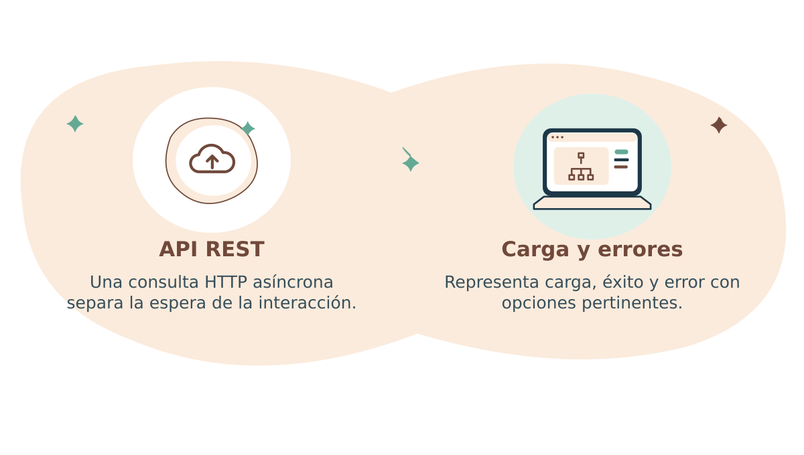
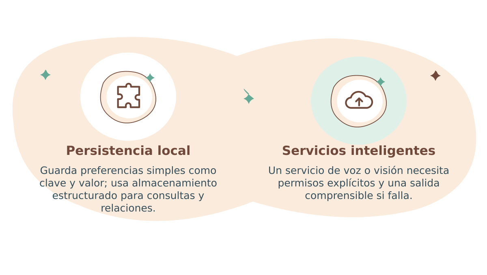
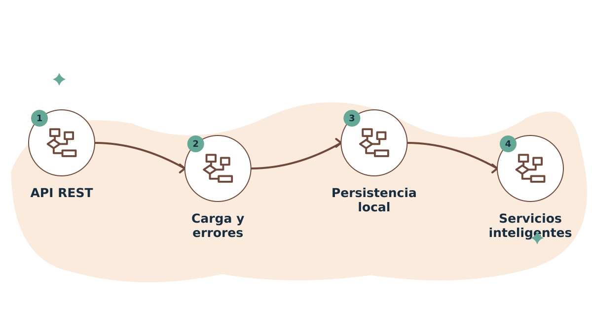

<div style="font-family:'Segoe UI',Arial,sans-serif;color:#333;line-height:1.6;max-width:100%;"><div style="background:#fff;border:1px solid #dee2e6;border-radius:15px;padding:22px;margin-bottom:20px;box-shadow:0 4px 12px rgba(0,0,0,.05);"><h2 style="color:#0056b3;margin-top:0;">Unidad 3 · Material de estudio</h2><h2 style="color:#1c3055; line-height:1.35; overflow-wrap:anywhere;">Unidad 3: Integración de servicios web, persistencia local y servicios inteligentes</h2>
<p style="overflow-wrap:anywhere;"></p>
<h3 style="color:#1c3055; line-height:1.35; overflow-wrap:anywhere;">Introducción</h3>
<p style="overflow-wrap:anywhere;">En esta unidad trabajarás con <strong>API REST</strong>, <strong>Carga y errores</strong>, <strong>Persistencia local</strong> y <strong>Servicios inteligentes</strong>. Observa cómo se relacionan estos conceptos al resolver el caso inicial.</p>
<h3 style="color:#1c3055; line-height:1.35; overflow-wrap:anywhere;">Resultados de aprendizaje</h3>
<p style="overflow-wrap:anywhere;">Resultados curriculares: Los estudiantes emplean entornos de programación y componentes móviles para ejecutar aplicaciones básicas y realizar pruebas de funcionamiento según procedimientos indicados.</p>
<p style="overflow-wrap:anywhere;"><strong>Resultados específicos de unidad</strong></p>
<ul>
<li style="overflow-wrap:anywhere;">Consume servicios web RESTful en segundo plano serializando y deserializando datos en formato JSON de forma asíncrona.</li>
<li style="overflow-wrap:anywhere;">Implementa almacenamiento local estructurado (SQLite / bases de datos locales) para habilitar soporte offline y sincronización.</li>
<li style="overflow-wrap:anywhere;">Conecta la aplicación móvil con sensores del dispositivo (GPS, cámara, acelerómetro) gestionando permisos de usuario seguros.</li>
<li style="overflow-wrap:anywhere;">Integra bibliotecas y modelos ligeros de IA en el cliente móvil para procesamiento de imágenes o autocompletado inteligente.</li>
</ul>
<h3 style="color:#1c3055; line-height:1.35; overflow-wrap:anywhere;">Mapa de contenidos</h3>
<div style="overflow-x:auto;max-width:100%;margin:16px 0;"><table class="table" style="width:100%;border-collapse:collapse;font-size:.9rem;">
<thead>
<tr>
<th style="padding:10px;border-bottom:1px solid #dee2e6;text-align:left;vertical-align:top;background:#eef4fb;color:#0056b3;" scope="col">Tema del PEA</th>
<th style="padding:10px;border-bottom:1px solid #dee2e6;text-align:left;vertical-align:top;background:#eef4fb;color:#0056b3;" scope="col">Subtemas</th>
</tr>
</thead>
<tbody><tr>
<td style="padding:10px;border-bottom:1px solid #dee2e6;text-align:left;vertical-align:top;">1. Consumo de APIs REST desde aplicaciones móviles mediante peticiones HTTP asíncronas. / Manejo de estados de interfaz</td>
<td style="padding:10px;border-bottom:1px solid #dee2e6;text-align:left;vertical-align:top;">3.1 Consumo de APIs REST desde aplicaciones móviles mediante peticiones HTTP asíncronas.<br>3.2 Manejo de estados de interfaz: cargando (loading), éxito y error de red con reintentos.</td>
</tr>
<tr>
<td style="padding:10px;border-bottom:1px solid #dee2e6;text-align:left;vertical-align:top;">2. Persistencia de datos local en el dispositivo (SharedPreferences / SQLite / Hive). / Introducción a la integración de servicios inteligentes móviles (reconocimiento de voz / visión básica).</td>
<td style="padding:10px;border-bottom:1px solid #dee2e6;text-align:left;vertical-align:top;">3.3 Persistencia de datos local en el dispositivo (SharedPreferences / SQLite / Hive).<br>3.4 Introducción a la integración de servicios inteligentes móviles (reconocimiento de voz / visión básica).</td>
</tr>
</tbody></table>
</div><h3 style="color:#1c3055; line-height:1.35; overflow-wrap:anywhere;">Caso inicial</h3>
<p style="overflow-wrap:anywhere;">La aplicación ficticia <em>ClimaAndes Campo</em> asiste a pequeños productores agrícolas con pronósticos climáticos y precios de insumos. En pruebas de campo, al perder señal en carretera la pantalla muestra vacío total como si no existieran alertas de heladas, las peticiones congelan el desplazamiento y una clave de servicio quedó escrita en el archivo principal. Usted implementará el consumo asíncrono seguro con manejo de estados, caché estructurado para lectura sin conexión y un servicio inteligente básico (como búsqueda por voz o entrada asistida) respetando permisos claros.</p>
<h3 style="color:#1c3055; line-height:1.35; overflow-wrap:anywhere;">Fundamentos conceptuales</h3>
<p style="overflow-wrap:anywhere;">Una aplicación móvil útil rara vez trabaja aislada: normalmente consulta datos en servidores remotos mediante peticiones en <strong>Protocolo de Transferencia de Hipertexto (HTTP)</strong> hacia una <strong>interfaz de programación de aplicaciones (API)</strong> de arquitectura <strong>REST</strong>. Como la red móvil es inestable y lenta comparada con el procesador local, estas consultas siempre deben ejecutarse de forma <strong>asincrónica</strong> en segundo plano para nunca congelar la pantalla principal. Al recibir la respuesta en formato <strong>Notación de Objetos de JavaScript (JSON)</strong>, se deserializa hacia clases tipadas bien definidas verificando campos nulos o inesperados antes de dibujar la vista.</p>
<p style="overflow-wrap:anywhere;">Una buena experiencia de usuario (UX) exige representar explícitamente los tres <strong>estados posibles de la interfaz</strong>: <em>cargando</em> (indicador visual mientras espera respuesta), <em>éxito</em> (lista o detalle validado) y <em>error de red o estado vacío</em> (mensaje comprensible con botón de reintento, sin dejar la pantalla en blanco ni hacer creer al usuario que no hay registros cuando simplemente falló el internet). Además, ninguna clave privada ni credencial sensible debe quedar escrita en texto plano dentro del repositorio o código del cliente móvil.</p>
<p style="overflow-wrap:anywhere;">Para que la aplicación siga funcionando en zonas sin cobertura, la <strong>persistencia local</strong> guarda datos en el dispositivo eligiendo la herramienta según su complejidad: <em>SharedPreferences</em> (o almacenamiento clave-valor) para ajustes simples como idioma o favoritos breves; y motores locales estructurados como <strong>SQLite</strong> o <strong>Hive</strong> para almacenar en caché catálogos completos y sincronizarlos al recuperar señal. Por último, la integración de <strong>sensores</strong> (como cámara o Sistema de Posicionamiento Global, <strong>GPS</strong>) y <strong>servicios inteligentes móviles</strong> (dictado por voz, lectura óptica o sugerencias de texto con modelos ligeros de inteligencia artificial) obliga a solicitar permisos en el momento exacto en que se necesitan (<em>justo a tiempo</em>), explicando claramente para qué se usarán y ofreciendo una alternativa manual si el usuario deniega el permiso.</p>
<h3 style="color:#1c3055; line-height:1.35; overflow-wrap:anywhere;">Tema 1: Consumo de APIs REST desde aplicaciones móviles mediante peticiones HTTP asíncronas. / Manejo de estados de interfaz</h3>
<p style="overflow-wrap:anywhere;"></p>
<h4 style="color:#1c3055; line-height:1.35; overflow-wrap:anywhere;">3.1 Consumo de APIs REST desde aplicaciones móviles mediante peticiones HTTP asíncronas.</h4>
<p style="overflow-wrap:anywhere;"><strong>Desarrollo técnico y aplicación.</strong> La solicitud HTTP es asíncrona y necesita validar estado y estructura de respuesta. Una conexión interrumpida puede dejar desconocido si el servidor procesó una operación. Diseñe consulta de estado o identificación de la solicitud cuando corresponda. No suponga que reintentar siempre es inocuo: una creación repetida puede producir duplicados aunque la primera confirmación no haya llegado al dispositivo.</p>
<p style="overflow-wrap:anywhere;">Una consulta HTTP asíncrona separa la espera de la interacción. Valida estado y forma de la respuesta antes de actualizar el modelo.</p>
<h4 style="color:#1c3055; line-height:1.35; overflow-wrap:anywhere;">3.2 Manejo de estados de interfaz: cargando (loading), éxito y error de red con reintentos.</h4>
<p style="overflow-wrap:anywhere;"><strong>Desarrollo técnico y aplicación.</strong> Cargando, éxito y error deben corresponder al estado real. Distinga resultado vacío de fallo y comunique cómo continuar. Limite reintentos y evite aplicar respuestas antiguas sobre una búsqueda nueva. La interfaz debe conservar información válida cuando una dependencia falla, sin presentar como confirmado un dato que solo permanece guardado localmente y todavía no se sincroniza.</p>
<p style="overflow-wrap:anywhere;">Representa carga, éxito y error con opciones pertinentes. Un reintento debe informar el estado y evitar operaciones duplicadas.</p>
<p style="overflow-wrap:anywhere;"><strong>Contenidos de base consignados en el PEA.</strong> Contenidos de base: Análisis del comportamiento del usuario en aplicaciones móviles · Núcleo curricular: Análisis de comportamiento del usuario en aplicaciones móviles</p>
<h3 style="color:#1c3055; line-height:1.35; overflow-wrap:anywhere;">Tema 2: Persistencia de datos local en el dispositivo (SharedPreferences / SQLite / Hive). / Introducción a la integración de servicios inteligentes móviles (reconocimiento de voz / visión básica).</h3>
<p style="overflow-wrap:anywhere;"></p>
<h4 style="color:#1c3055; line-height:1.35; overflow-wrap:anywhere;">3.3 Persistencia de datos local en el dispositivo (SharedPreferences / SQLite / Hive).</h4>
<p style="overflow-wrap:anywhere;"><strong>Desarrollo técnico y aplicación.</strong> La persistencia local puede almacenar preferencias, caché o datos de trabajo según su función. Una base de datos y un almacenamiento simple no son intercambiables para todas las consultas. Defina esquema, actualización y eliminación. Si existe sincronización, identifique origen de verdad y conflictos: reemplazar automáticamente el servidor con una copia antigua puede perder modificaciones legítimas de otro dispositivo.</p>
<p style="overflow-wrap:anywhere;">Guarda preferencias simples como clave y valor; usa almacenamiento estructurado para consultas y relaciones. Define qué datos se protegen y sincronizan.</p>
<h4 style="color:#1c3055; line-height:1.35; overflow-wrap:anywhere;">3.4 Introducción a la integración de servicios inteligentes móviles (reconocimiento de voz / visión básica).</h4>
<p style="overflow-wrap:anywhere;"><strong>Desarrollo técnico y aplicación.</strong> Un servicio inteligente requiere entrada apropiada, permisos y tratamiento de errores o incertidumbre. Reconocer una voz o imagen no garantiza interpretación correcta. Antes de ejecutar una acción relevante, confirme el dato o permita revisión según el riesgo. Mantenga alternativa cuando el servicio no está disponible y no recoja información del dispositivo que la funcionalidad del ejercicio no necesita.</p>
<p style="overflow-wrap:anywhere;">Un servicio de voz o visión necesita permisos explícitos y una salida comprensible si falla. Revisa qué datos deben enviarse o conservarse.</p>
<p style="overflow-wrap:anywhere;"><strong>Contenidos de base consignados en el PEA.</strong> Contenidos de base: Integración básica de servicios inteligentes en aplicaciones · Núcleo curricular: Integración básica de servicios inteligentes en aplicaciones</p>
<h3 style="color:#1c3055; line-height:1.35; overflow-wrap:anywhere;">Ejemplo aplicado</h3>
<p style="overflow-wrap:anywhere;">Si falla la conexión, muestra una copia local fechada si existe. Ofrece reintentar y evita presentar la copia como recién actualizada.</p>
<p style="overflow-wrap:anywhere;">Una aplicación ficticia de consulta climática borra la lista de pronósticos guardados apenas inicia la petición de actualización; si el teléfono entra en un túnel sin señal, muestra la lista vacía junto al texto <em>"No hay alertas registradas"</em>.</p>
<ul>
<li style="overflow-wrap:anywhere;"><em>Riesgo de experiencia de usuario:</em> El agricultor o viajero concluye erróneamente que no existe ninguna alerta activa, cuando en realidad la aplicación no pudo conectarse al servidor.</li>
<li style="overflow-wrap:anywhere;"><em>Solución corregida:</em> Mantener visibles los datos almacenados en caché local (SQLite o Hive) indicando la fecha y hora de la última actualización exitosa, mostrar un aviso discreto <em>"Sin conexión; mostrando datos guardados"</em> y ofrecer un botón manual de reintento.</li>
</ul>
<h3 style="color:#1c3055; line-height:1.35; overflow-wrap:anywhere;">Profundización técnica de la unidad</h3>
<h4 style="color:#1c3055; line-height:1.35; overflow-wrap:anywhere;">Integración REST, caché y persistencia local</h4>
<p style="overflow-wrap:anywhere;">Una aplicación móvil debe diferenciar datos remotos, copia local y cambios pendientes. La caché mejora disponibilidad, pero puede quedar desactualizada. Defina origen de verdad, política de actualización y tratamiento de conflictos. Una respuesta HTTP exitosa también necesita validación del esquema y del significado esperado.</p>
<p style="overflow-wrap:anywhere;"><strong>Ejemplo resuelto.</strong> Un usuario modifica una nota sin conexión. El dispositivo conserva estado «pendiente de sincronización». Si el servidor contiene una versión posterior, sobrescribirla automáticamente puede perder cambios ajenos. Compare versiones y aplique una política documentada, como revisión de conflicto. Un icono de sincronización solo comunica correctamente si refleja ese estado real.</p>
<p style="overflow-wrap:anywhere;">Los reintentos necesitan límites y deben considerar si repetir la operación produce duplicados. No almacene secretos de servicio con privilegios amplios dentro del cliente distribuido. Una API de IA se integra preferentemente a través de un servicio que controle permisos, costos y datos enviados cuando el diseño lo requiera. <strong>Reflexión:</strong> ¿qué diferencia hay entre mostrar una copia local y afirmar que el dato ya está confirmado por el servidor?</p>
<h4 style="color:#1c3055; line-height:1.35; overflow-wrap:anywhere;">Datos y condiciones para estudiar el caso en detalle</h4>
<p style="overflow-wrap:anywhere;">La aplicación ficticia <em>ClimaAndes Campo</em> (caso simulado exclusivamente con fines formativos) ofrece pronósticos meteorológicos e información de insumos agrícolas para zonas rurales con señal móvil intermitente. La versión previa fue rechazada por cuatro deficiencias técnicas y de experiencia de usuario (UX):</p>
<div style="overflow-x:auto;max-width:100%;margin:16px 0;"><table class="table" style="width:100%;border-collapse:collapse;font-size:.9rem;">
<thead>
<tr>
<th style="padding:10px;border-bottom:1px solid #dee2e6;text-align:left;vertical-align:top;background:#eef4fb;color:#0056b3;" scope="col">Incidencia técnica</th>
<th style="padding:10px;border-bottom:1px solid #dee2e6;text-align:left;vertical-align:top;background:#eef4fb;color:#0056b3;" scope="col">Comportamiento actual defectuoso</th>
<th style="padding:10px;border-bottom:1px solid #dee2e6;text-align:left;vertical-align:top;background:#eef4fb;color:#0056b3;" scope="col">Requerimiento de ingeniería y experiencia de usuario</th>
</tr>
</thead>
<tbody><tr>
<td style="padding:10px;border-bottom:1px solid #dee2e6;text-align:left;vertical-align:top;">RED-01</td>
<td style="padding:10px;border-bottom:1px solid #dee2e6;text-align:left;vertical-align:top;">La consulta web bloquea la interfaz y si hay demora muestra pantalla en blanco</td>
<td style="padding:10px;border-bottom:1px solid #dee2e6;text-align:left;vertical-align:top;">Consumo HTTP asíncrono en segundo plano con indicador claro de carga y estado de éxito</td>
</tr>
<tr>
<td style="padding:10px;border-bottom:1px solid #dee2e6;text-align:left;vertical-align:top;">RED-02</td>
<td style="padding:10px;border-bottom:1px solid #dee2e6;text-align:left;vertical-align:top;">Cuando falla internet, la vista vacía muestra "No hay alertas" induciendo a error</td>
<td style="padding:10px;border-bottom:1px solid #dee2e6;text-align:left;vertical-align:top;">Conservar caché local estructurado (SQLite o Hive) con fecha de última actualización y botón de reintento</td>
</tr>
<tr>
<td style="padding:10px;border-bottom:1px solid #dee2e6;text-align:left;vertical-align:top;">RED-03</td>
<td style="padding:10px;border-bottom:1px solid #dee2e6;text-align:left;vertical-align:top;">La dirección web (URL) y una clave de prueba quedaron fijas en el archivo principal de la interfaz</td>
<td style="padding:10px;border-bottom:1px solid #dee2e6;text-align:left;vertical-align:top;">Separar capa de servicio de la vista y nunca exponer credenciales reales en el repositorio</td>
</tr>
<tr>
<td style="padding:10px;border-bottom:1px solid #dee2e6;text-align:left;vertical-align:top;">RED-04</td>
<td style="padding:10px;border-bottom:1px solid #dee2e6;text-align:left;vertical-align:top;">El buscador exige escribir nombres exactos con señal activa y solicita permisos al abrir la app</td>
<td style="padding:10px;border-bottom:1px solid #dee2e6;text-align:left;vertical-align:top;">Incorporar autocompletado inteligente local o entrada por voz/ubicación con permiso solicitado justo al usarse</td>
</tr>
</tbody></table>
</div><p style="overflow-wrap:anywhere;">Su misión durante las semanas 5 y 6 consiste en implementar este módulo móvil de <em>ClimaAndes Campo</em>, verificar primero el contrato de respuesta JSON en Postman o Insomnia, probar el comportamiento sin conexión en el emulador y documentar la solución junto con una explicación en audio o video asincrónico e intercambio secuencial en Moodle.</p>
<h4 style="color:#1c3055; line-height:1.35; overflow-wrap:anywhere;">Desarrollo del procedimiento y controles del caso</h4>
<p style="overflow-wrap:anywhere;">El siguiente recorrido desarrolla la misma práctica de esta unidad. Se estudia junto con sus datos y controles; las consignas y los criterios de entrega se conservan en el apartado de actividades y en la guía enlazada.</p>
<ol>
<li style="overflow-wrap:anywhere;"><strong>Validación del contrato de datos y capa de servicio (semana 5):</strong> Pruebe en Postman o Insomnia la petición en Protocolo de Transferencia de Hipertexto (HTTP) hacia la API pública elegida, guarde una captura de la respuesta real en Notación de Objetos de JavaScript (JSON) y cree en su proyecto móvil las clases modelo tipadas con deserialización segura (protegida frente a campos nulos). Separe la lógica de red en un servicio independiente de los archivos de interfaz de usuario (UI).</li>
<li style="overflow-wrap:anywhere;"><strong>Manejo explícito de estados de interfaz:</strong> Programe la vista principal para representar claramente cuatro estados: <em>cargando</em> (indicador visual amigable), <em>éxito</em> (datos actualizados desde la red), <em>error de red</em> (mensaje comprensible con botón de reintento sin perder lo previo) y <em>modo sin conexión con caché</em> (mostrando los últimos datos guardados más la marca de fecha y hora de actualización).</li>
<li style="overflow-wrap:anywhere;"><strong>Persistencia local estructurada (semana 6):</strong> Integre almacenamiento local mediante <strong>SQLite</strong>, <strong>Hive</strong> o <strong>SharedPreferences</strong> (eligiendo SQLite o Hive si guarda catálogos de varios registros y SharedPreferences para favoritos o marca temporal) para que la aplicación guarde automáticamente cada respuesta exitosa y permita marcar favoritos que sobreviven al cierre total de la aplicación.</li>
<li style="overflow-wrap:anywhere;"><strong>Capacidad inteligente móvil y gestión segura de permisos:</strong> Añada una funcionalidad inteligente práctica acorde con el caso: por ejemplo, autocompletado inteligente local sobre el caché para buscar cultivos o localidades, reconocimiento básico por voz o lectura de coordenadas mediante Sistema de Posicionamiento Global (GPS) para consultar el clima local, solicitando el permiso del dispositivo únicamente cuando el usuario presione el botón correspondiente y ofreciendo entrada manual si el permiso es rechazado.</li>
<li style="overflow-wrap:anywhere;"><strong>Pruebas bajo conectividad limitada y condiciones límite:</strong> Ejecute y capture evidencias en el emulador bajo tres escenarios: (a) <strong>condición normal</strong> con red activa cargando datos desde la API y guardando favoritos en almacenamiento local; (b) <strong>condición límite</strong> activando el simulador de red lenta (<em>network throttling</em>) o modo avión tras cerrar y volver a abrir la aplicación, verificando que los datos guardados en caché permanezcan visibles con aviso de <em>"Sin conexión; mostrando datos guardados"</em>; y (c) <strong>condición de error</strong> enviando una consulta con dirección inválida o respuesta malformada para comprobar que la interfaz no se cierre inesperadamente y ofrezca recuperación.</li>
<li style="overflow-wrap:anywhere;"><strong>Intercambio asincrónico y explicación oral integrada:</strong> Documente un breve intercambio secuencial de revisión en Moodle (o registro de validación de pruebas) y grabe un audio o video asincrónico (entre 2 y 3 minutos) demostrando el paso del modo en línea al modo avión en el emulador sin perder los datos de <em>ClimaAndes Campo</em> y explicando cómo gestionó la recuperación de errores y permisos. Reúna todo en una sola entrega en Moodle.</li>
</ol>
<p style="overflow-wrap:anywhere;"><a href="https://docs.google.com/document/d/1mZ2uCu7CzIqred5M5ck8Unn1SoU5ZJPZ/edit?usp=drivesdk&amp;ouid=103668893019291892783&amp;rtpof=true&amp;sd=true" target="_self">Fuente del caso y del procedimiento: Guía de Prácticas, práctica 3</a>. Las explicaciones y los ejemplos resueltos de esta profundización son desarrollo didáctico de los contenidos de la unidad; sus cifras de ejemplo no sustituyen las del caso de la guía.</p>
<h3 style="color:#1c3055; line-height:1.35; overflow-wrap:anywhere;">Esquema de aplicación</h3>
<p style="overflow-wrap:anywhere;"></p>
<h3 style="color:#1c3055; line-height:1.35; overflow-wrap:anywhere;">Actividades de aprendizaje</h3>
<ol>
<li style="overflow-wrap:anywhere;"><p style="overflow-wrap:anywhere;"><strong>Trabajo Autónomo:</strong> Desarrolla un módulo móvil funcional que consuma una API pública, presente listas dinámicas con manejo de estados y persista favoritos localmente. Acompáñalo de un informe único de análisis y fundamentación. Documenta la petición HTTP asíncrona, deserialización JSON, estados de carga y error, almacenamiento local y un componente básico de servicio inteligente o sensor con permisos seguros. Reúne los resultados en una única versión consolidada en Moodle. <strong>Entrega: 10 de enero de 2027.</strong></p>
</li>
<li style="overflow-wrap:anywhere;"><p style="overflow-wrap:anywhere;"><strong>Trabajo Práctico-Experimental de la Unidad 3 (100 % asincrónico):</strong> Integración de APIs y persistencia mediante el consumo de un servicio web de clima o productos con almacenamiento en caché local para acceso sin conexión, manejo explícito de fallas de red, prueba con simulador de conectividad limitada, integración básica de reconocimiento o sugerencia inteligente y documentación mediante intercambios secuenciales y breve audio o video asincrónico dentro del mismo producto. El procedimiento detallado figura en la Práctica 3 de la Guía de Prácticas y se entrega hasta el 17 de enero de 2027.</p>
</li>
</ol>
<h3 style="color:#1c3055; line-height:1.35; overflow-wrap:anywhere;">Cierre de la unidad</h3>
<p style="overflow-wrap:anywhere;"><strong>Síntesis aplicada.</strong> Integrar servicios web y persistencia de datos local en aplicaciones móviles gestionando el ciclo de vida de la aplicación y la conectividad.</p>
<p style="overflow-wrap:anywhere;"><strong>Para reflexionar.</strong> ¿Qué señal indica que la información visible proviene de la caché?</p>
<h3 style="color:#1c3055; line-height:1.35; overflow-wrap:anywhere;">Lecturas asignadas</h3>
<p style="overflow-wrap:anywhere;">Referencias y localizadores consignados en el PEA.</p>
<ul>
<li style="overflow-wrap:anywhere;"><strong>Básica.</strong> Google Flutter Documentation Team (2024). <em>Flutter &amp; Dart Official Documentation: Building Beautiful Native Apps</em>. Google Open Resources. <a href="https://docs.flutter.dev/" target="_self">https://docs.flutter.dev/</a> Lectura indicada en el PEA: Apartados relacionados con los contenidos de la asignatura.</li>
<li style="overflow-wrap:anywhere;"><strong>Básica.</strong> Google LLC (2024). <em>Material Design 3: The Next Generation of Material for Mobile Interfaces</em>. <a href="https://m3.material.io/" target="_self">https://m3.material.io/</a> Lectura indicada en el PEA: Apartados relacionados con los contenidos de la asignatura.</li>
<li style="overflow-wrap:anywhere;"><strong>Básica.</strong> Apple Inc. (2024). <em>Human Interface Guidelines: Design for iOS, iPadOS and Multi-touch Interaction</em>. Apple Developer. <a href="https://developer.apple.com/design/human-interface-guidelines/" target="_self">https://developer.apple.com/design/human-interface-guidelines/</a> Lectura indicada en el PEA: Apartados relacionados con los contenidos de la asignatura.</li>
<li style="overflow-wrap:anywhere;"><strong>Complementaria.</strong> Soegaard, M. y Dam, R. F. (2024). <em>The Encyclopedia of Human-Computer Interaction</em> (2.ª ed.). Interaction Design Foundation. Lectura indicada en el PEA: Apartados relacionados con los contenidos de la asignatura.</li>
<li style="overflow-wrap:anywhere;"><strong>Complementaria.</strong> Meta Open Source (2024). <em>React Native: Learn the Basics of Cross-Platform Mobile Development</em>. <a href="https://reactnative.dev/docs/getting-started" target="_self">https://reactnative.dev/docs/getting-started</a> Lectura indicada en el PEA: Apartados relacionados con los contenidos de la asignatura.</li>
<li style="overflow-wrap:anywhere;"><strong>Complementaria.</strong> Lidwell, W., Holden, K. y Butler, J. (2023). <em>Universal Principles of Design</em> (3.ª ed. actualizada y ampliada). Rockport Publishers. Lectura indicada en el PEA: Apartados relacionados con los contenidos de la asignatura.</li>
</ul>
</div></div>
